黑暗。无边的黑暗。然后——绿色的代码如瀑布般在虚空中倾泻而下，一行行，一列列，无尽地滚动……
突然，一切戛然而止。一阵刺耳的闹钟声炸裂开来——
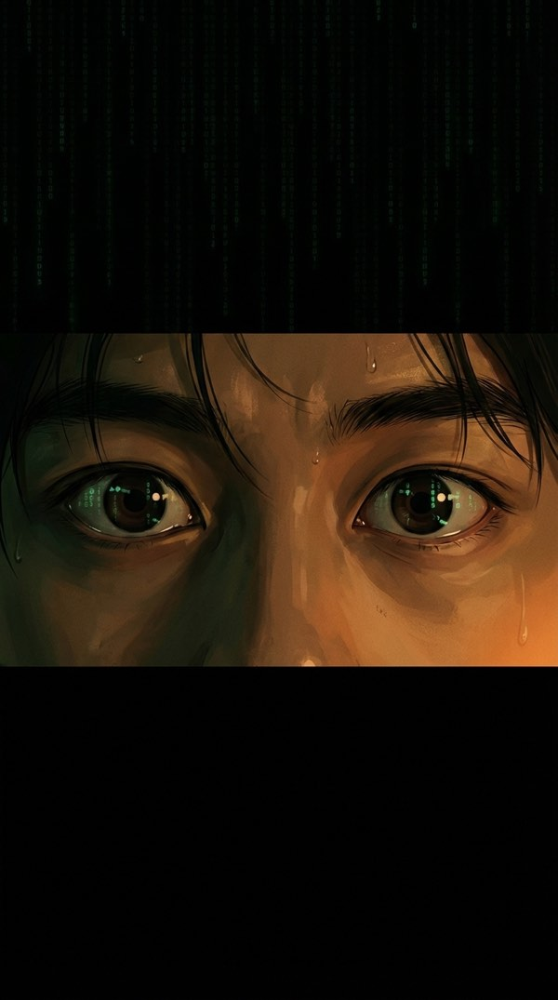
黑暗。无边的黑暗。然后——绿色的代码如瀑布般在虚空中倾泻而下，一行行，一列列，无尽地滚动……
突然，一切戛然而止。一阵刺耳的闹钟声炸裂开来——
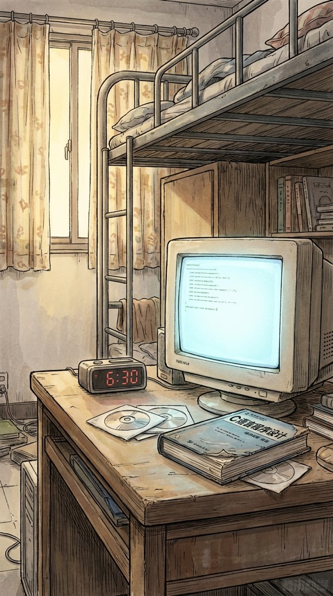
我猛然睁开眼。看到的是——发黄的天花板。上铺的床板。一台老旧的CRT显示器泛着微弱的蓝光。桌上散落着《C语言程序设计》、几张盗版光碟、一个红色塑料笔筒。
这是……哪？
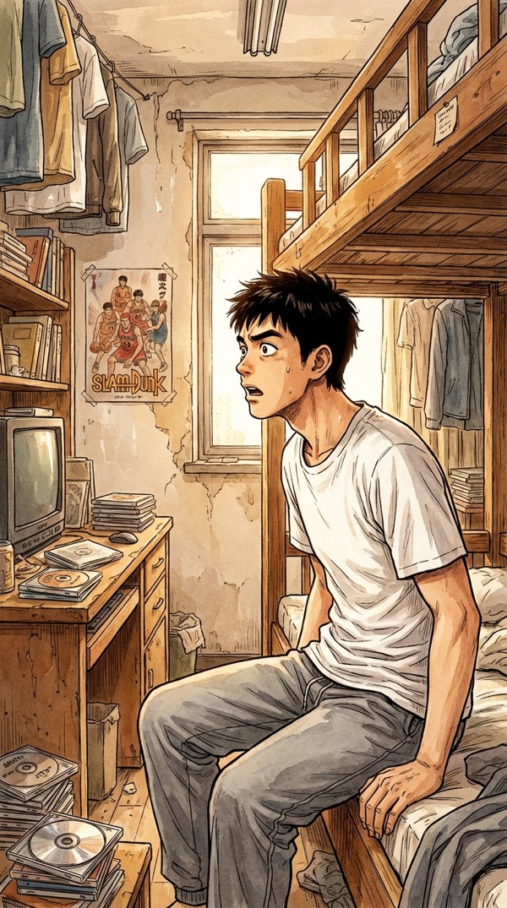
我缓缓坐起来，浑身僵硬得像在冰水里泡了一夜。环顾四周——木制双层床、铁皮柜子上贴着灌篮高手的海报、桌上的闹钟还在疯狂作响。
我伸手按停了闹钟。日历翻到——
2001年9月17日。
我的手开始发抖。
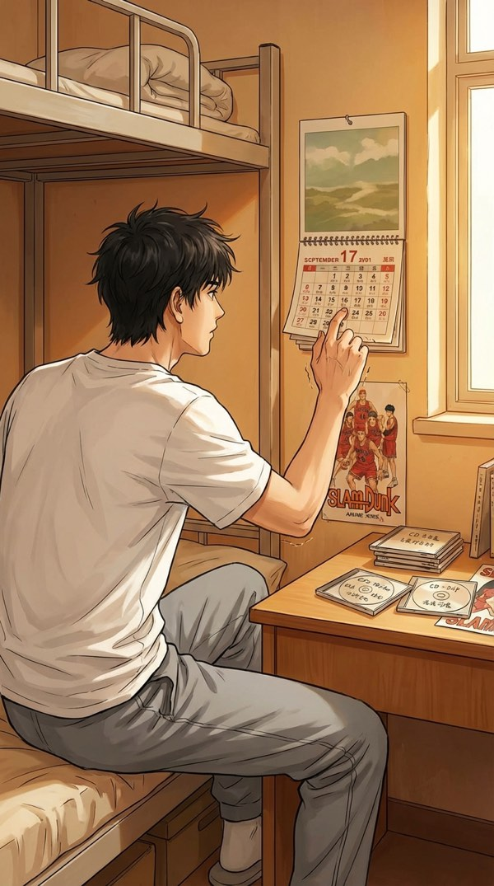
我盯着墙上的日历看了整整三十秒。那些泛黄的数字清清楚楚：2001。九月。上海交通大学计算机系新生宿舍。
我回来了。回到了那个梦开始的年代。
对面床上，一个巨大的打鼾声如同拖拉机启动——"呼噜——嗤——呼噜——"
……我重生后面对的第一个挑战，居然是大壮的鼾声。有些东西，25年都改变不了。
我走出宿舍楼，九月的上海晨光温柔。交大闵行校区的林荫大道上，自行车三三两两，路边停着几辆，有同学踩着人字拖去食堂。一切都鲜活得不真实。
25年后的这些树会长成参天大树。而现在，它们和我一样年轻。
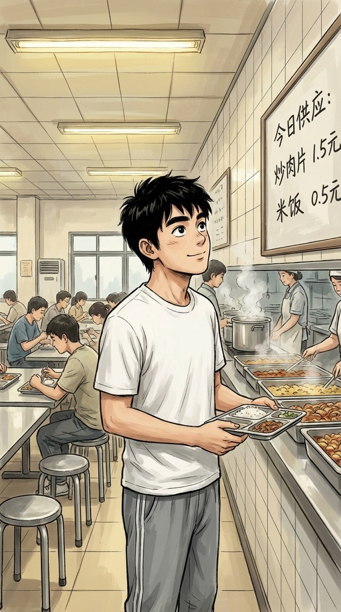
食堂。铝制餐盘，大锅里冒着腾腾热气。菜牌上歪歪斜斜地写着：红烧肉1.5元，青菜0.5元，米饭0.3元。
一顿饭不到三块钱。25年后这个价格买不到一瓶矿泉水。
我下意识地摸了摸口袋——找手机。
没有手机。
我愣了三秒。
……对了。2001年。诺基亚3310还是奢侈品，我现在是个月生活费600块的穷学生。
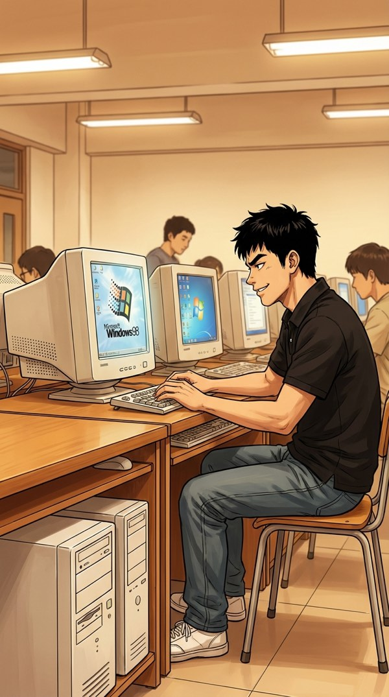
下午，我坐进了机房。一排排米白色的方正台式机，CRT显示器嗡嗡作响，Windows 98的蓝天白云桌面闪烁着。
手指搭上键盘的那一刻，25年的肌肉记忆如同洪水决堤——
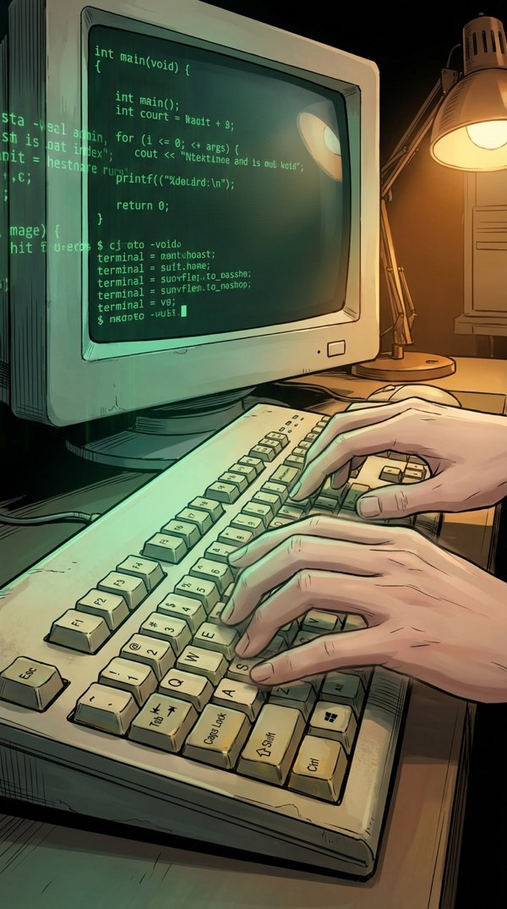
指尖飞舞。代码如流水般从我的手指尖涌出。C语言、汇编、网络协议——25年的编程经验灌注在18岁的大脑和手指上，速度快得连我自己都吓了一跳。
我打开了一个当时很流行的加密聊天软件，开始逆向分析它的通信协议。不是为了获利，纯粹是——
想看看自己现在到底能做到什么程度。
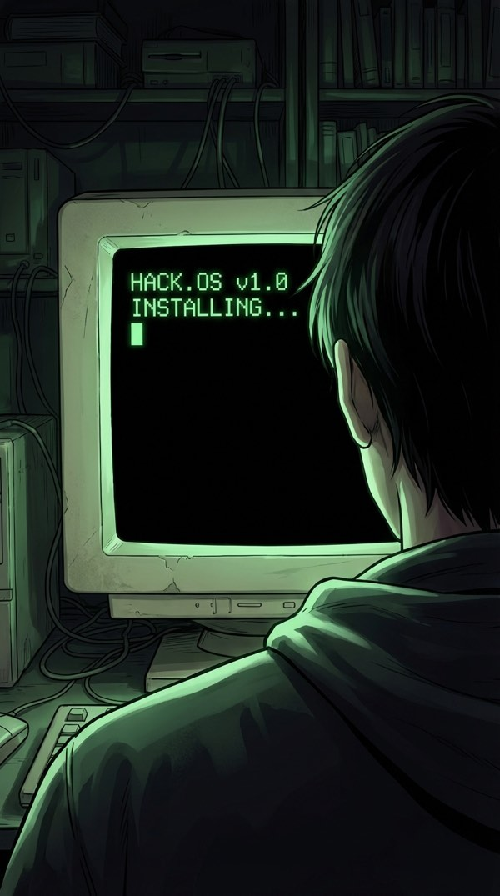
然后——屏幕突然黑了。
没有蓝屏，没有报错，只有纯粹的黑。然后，一行绿色的字符从屏幕顶端开始滚落——
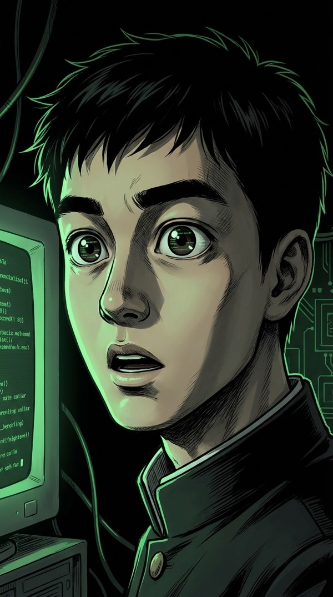
绿色的光映在我的脸上。我盯着屏幕，瞳孔收缩。
这不是病毒。不是恶作剧。它知道我的名字。它知道"时间位移"。它知道……我不属于这个时代。
我下意识看了一眼旁边座位的同学——他的屏幕上还是正常的Windows桌面。只有我能看到这个界面。
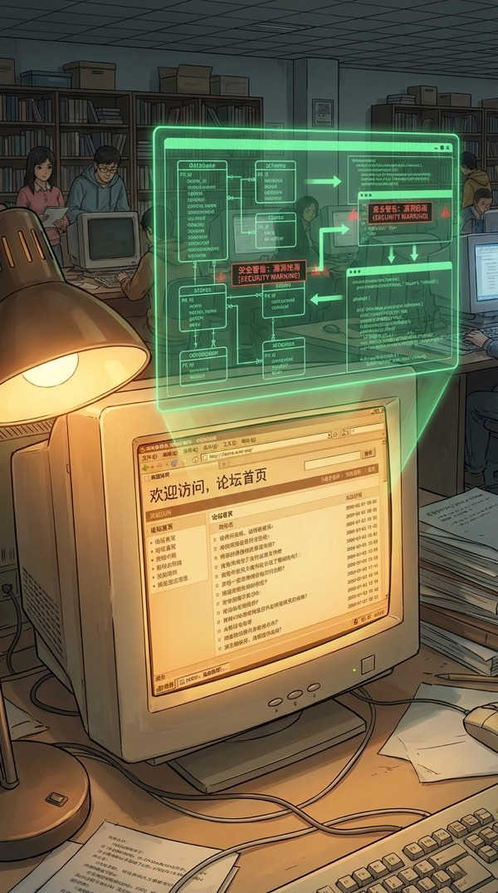
Hack.OS激活后，世界变了。
我打开校园BBS——饮水思源。表面是普通的论坛页面，但在我眼中，半透明的绿色浮层叠加在上面：数据库结构图、数据流向箭头、安全漏洞的红色标记……就像给代码世界装了一副X光眼镜。
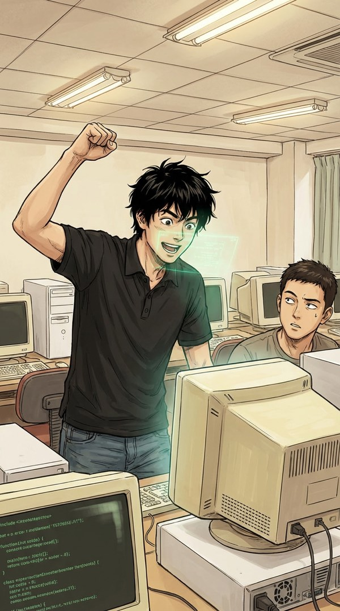
我又看了一眼QQ的客户端——
我激动得差点在机房里跳起来。
"没事没事，就是……发现了一个很有趣的bug。"
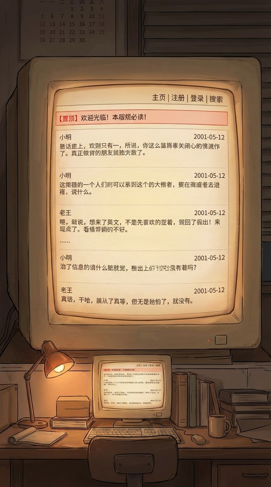
Hack.OS检测到饮水思源BBS存在一个严重的SQL注入漏洞，可获取所有用户的注册信息。我该怎么做？
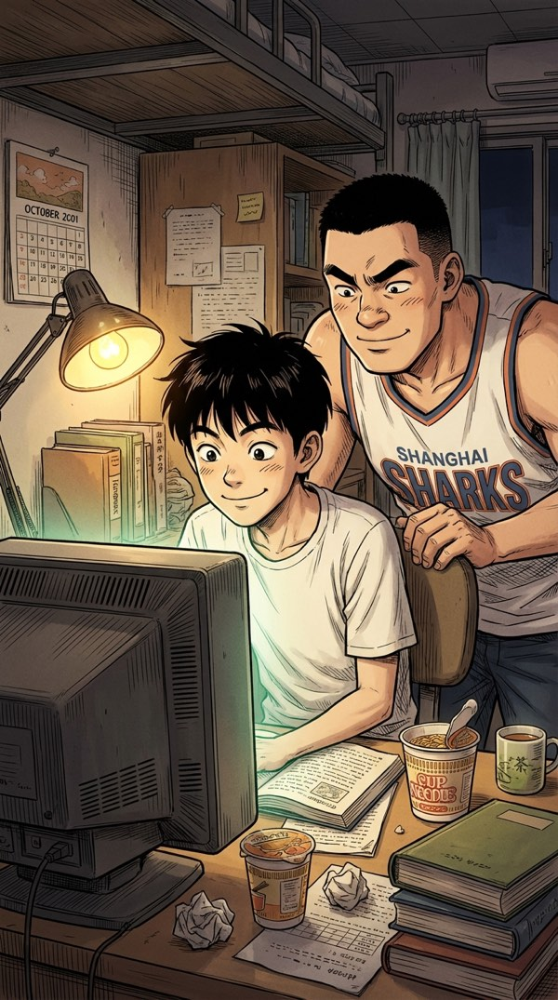
当晚。我坐在宿舍里，给BBS管理员发了一封匿名邮件——附上漏洞详情、复现步骤和修复方案。署名只写了三个字：
"一个路过的人。"
大壮从上铺探出头来："你在干啥？这么晚还噼里啪啦的。"
"写作业。"
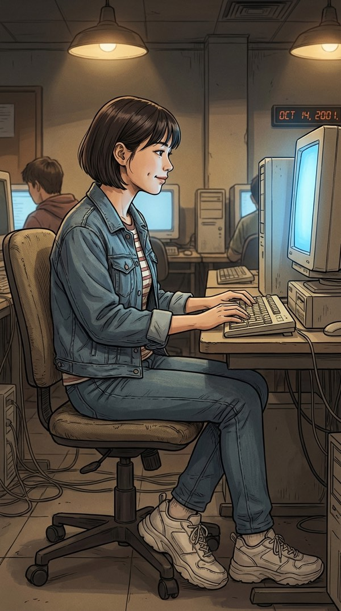
第二天。BBS上出现了一个置顶帖：《感谢一位匿名同学发现并通报了系统安全漏洞》。帖子下面炸了锅——"谁啊这么牛？""大一新生不可能有这个水平""肯定是研究生甚至老师"。
在帖子最底部，BBS版主"苏雨晴"回复道：
苏雨晴。计算机系大三，校园网安全小组组长。短发利落，技术圈小有名气。在我的记忆里，她后来成了国内第一批网络安全领域的女性专家。
要不要联系她？
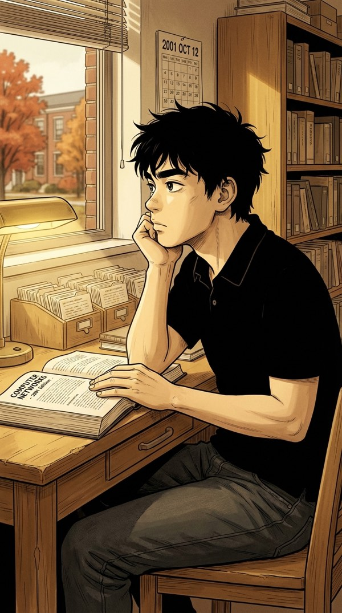
一周后。我坐在图书馆里，面前摊着《计算机网络》教材，但脑子里转的是更大的事。
2001年。中国互联网站在巨大的分水岭上。纳斯达克泡沫刚破，无数.com公司倒闭。但真正的巨头——百度2000年刚成立，阿里巴巴在苦苦挣扎，腾讯的QQ还不知道怎么赚钱。
而我，带着25年的记忆，坐在这里。
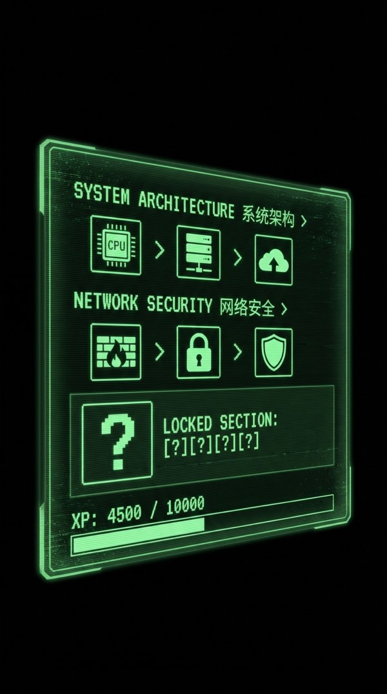
系统突然弹出了提示——
我愣了一下，然后笑了。系统在暗示——虽然不能直接说"买腾讯股票"，但可以通过"直觉"来引导决策。
规则的边界。这正是黑客最擅长的领域。
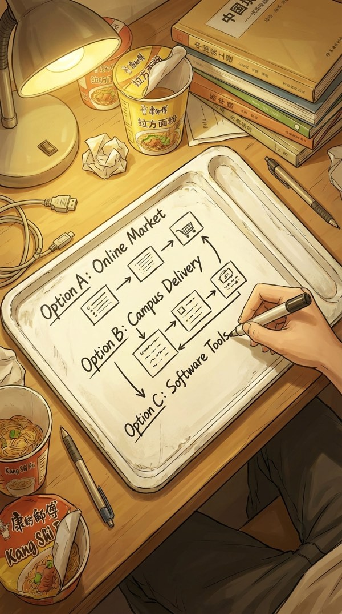
回到宿舍。我从食堂顺了一个塑料托盘当白板，用记号笔画了三个方向——
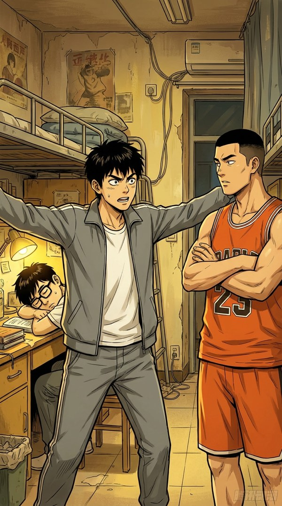
我的方案：做一个"漏洞猎手"工具——帮企业扫描系统安全漏洞。免费基础版+付费深度报告。2001年没人在做这个。
他站在对面，双臂抱胸，表情写满了怀疑。
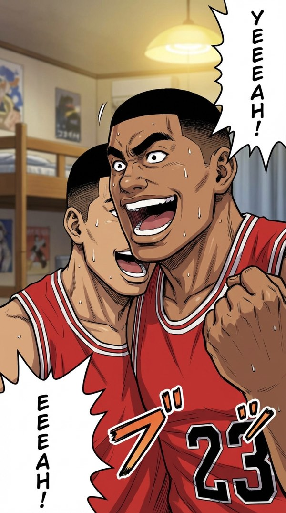
大壮的眼睛亮了。
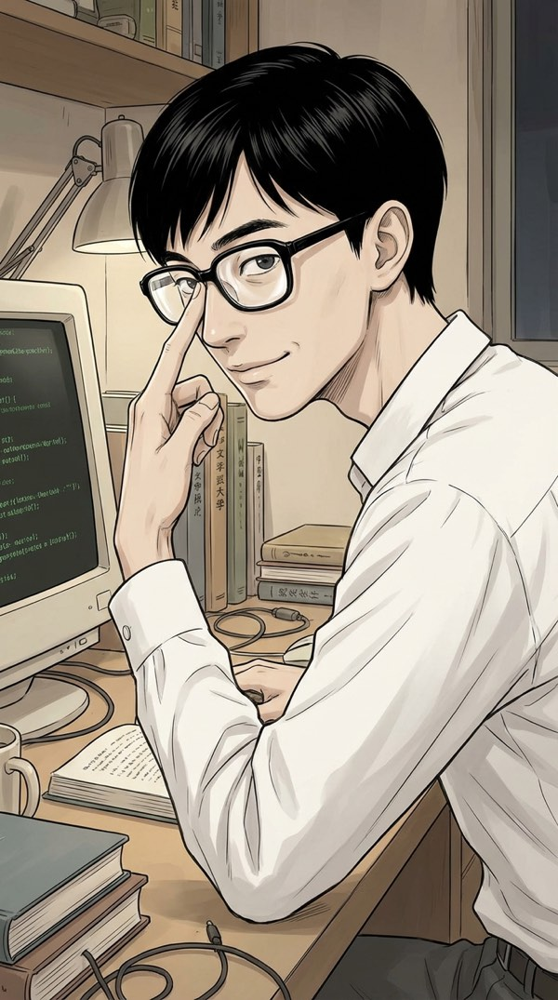
然后是眼镜——李文博。我给他看了一段代码，是我花一个通宵写的漏洞扫描引擎原型。
李文博推了推那副厚得能防弹的黑框眼镜，沉默了十秒钟。然后说了他入学以来最长的一句话——
就这样。不问为什么，不问能赚多少，只关心代码能不能更优雅。
典型的程序员。我喜欢。
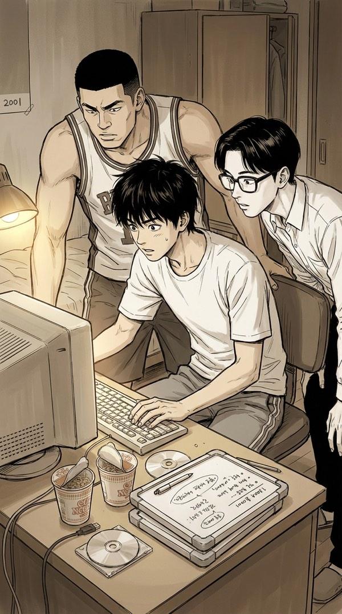
三个人。一台CRT电脑。一个从食堂顺来的塑料托盘当白板。桌上堆着泡面盒和散落的盗版光碟。
中国互联网历史上最不起眼的一支创业团队，在上海交大男生宿舍405室，正式成立了。
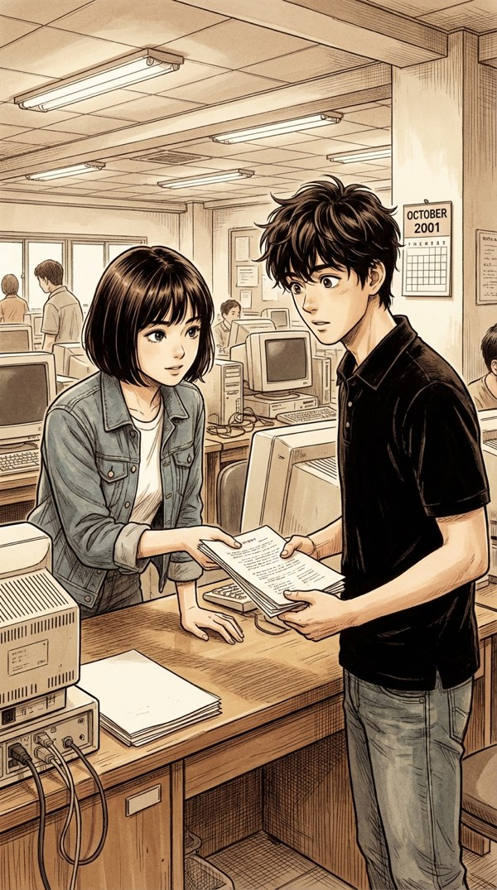
三周后。"漏洞猎手"beta版完成。眼镜优化了核心算法，大壮负责在BBS上推广（以及每天从食堂带三份饭回宿舍——他管这叫"后勤保障"）。
第一个客户来了——学姐苏雨晴。她代表学校网络中心，想用我们的工具扫描校园网。
她挑了挑眉，酒窝若隐若现。
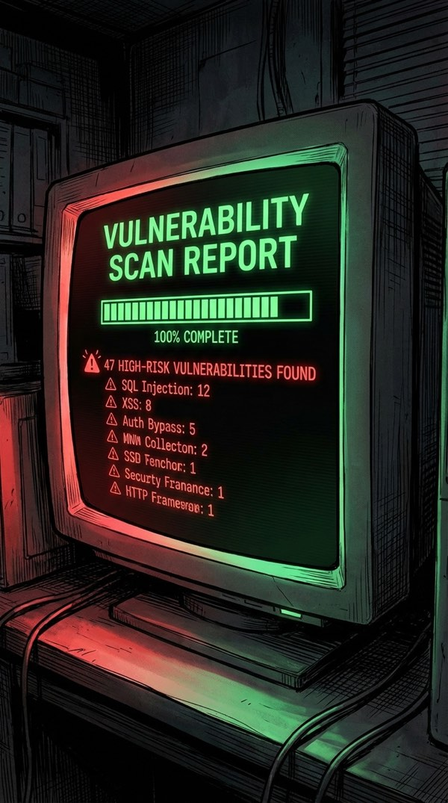
扫描结果出来了。
47
高危漏洞
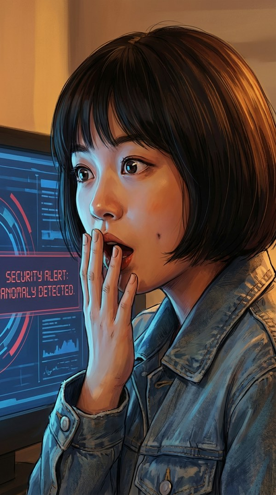
苏雨晴看到报告的时候脸色大变。
我递过去一份详细的修复文档——47个漏洞，每个都有原因分析和修复步骤。苏雨晴翻了几页，抬头看我的眼神变了。
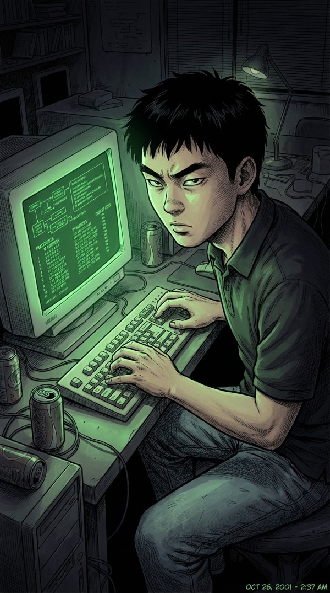
扫描校园网的过程中，我发现了一个不该出现的东西。
某台服务器上有大量加密流量——不是正常的学术数据，而是指向校外一个商业网站的自动化数据请求。有人在用学校的服务器……做违法的事。
盗取用户数据。
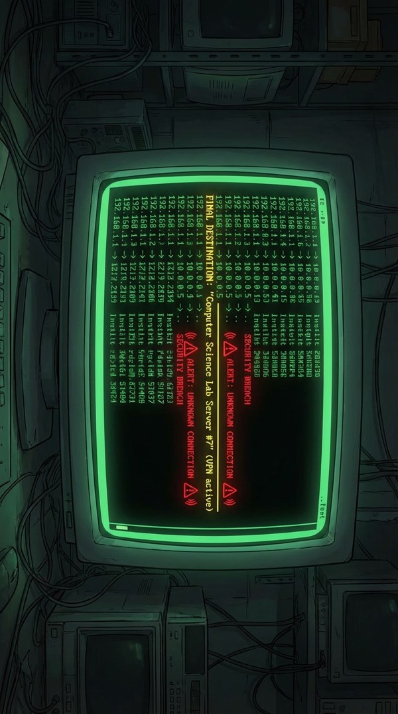
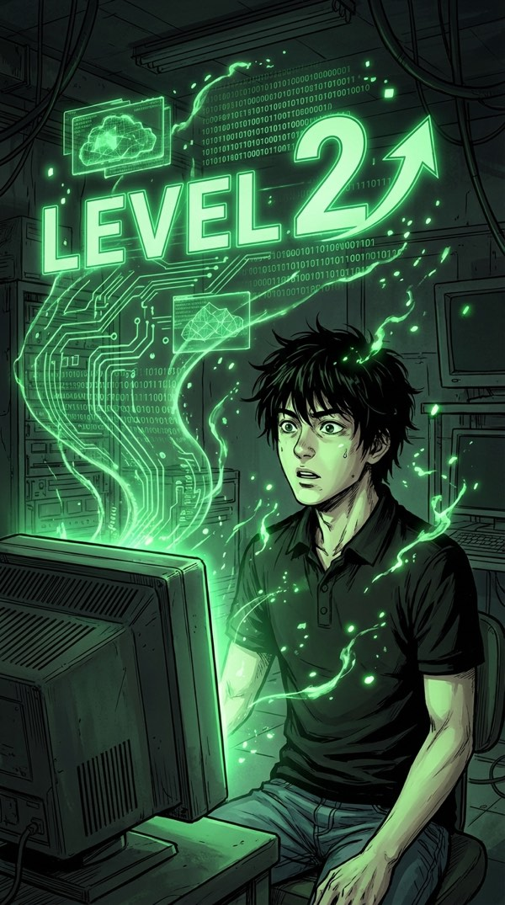
我决定追查。指尖在键盘上飞舞，系统辅助下，我顺着加密流量的痕迹往上追溯……一层一层剥开伪装……VPN跳板、加密隧道、伪造的IP地址——
最终，真实的源头IP地址浮出水面。
指向——赵教授实验室的VPN。
不是赵教授本人。教授不会做这种事。但他实验室里的某个研究生……
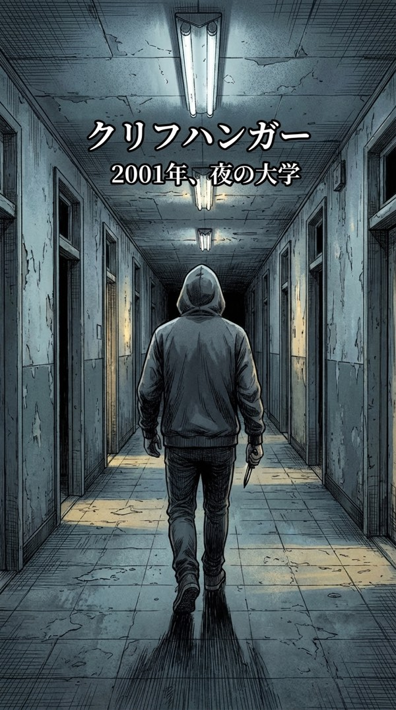
我转头看向机房的窗户。
走廊上，一个穿灰色卫衣的高个子男生正匆匆走过——朝着服务器机房的方向。他的兜帽罩住了大半张脸，步伐很快，不想被人注意到。
但我捕捉到了一个细节——
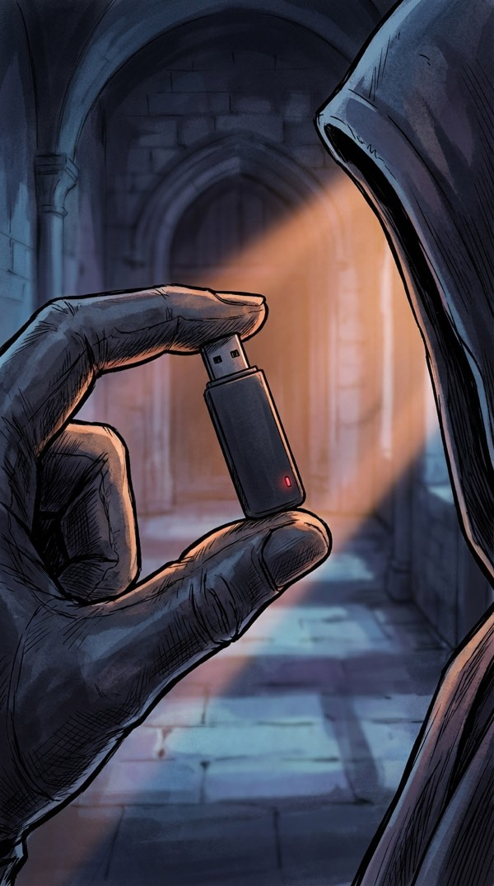
他手里拿着一个U盘。黑色的。很小。
和校园网里那个加密密钥的生成器……完全同款。
我的手悬在键盘上方，绿色的系统界面在屏幕上静静闪烁。